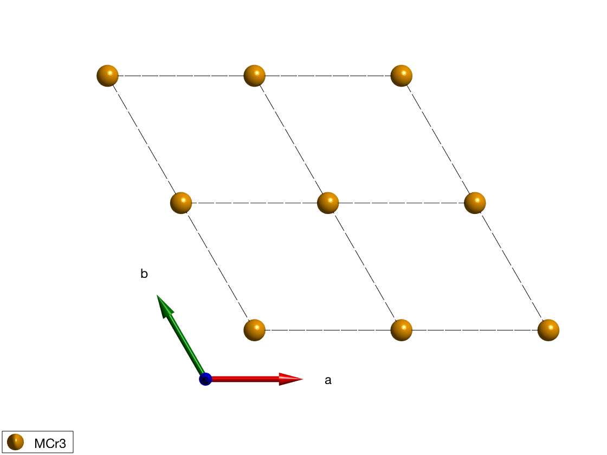
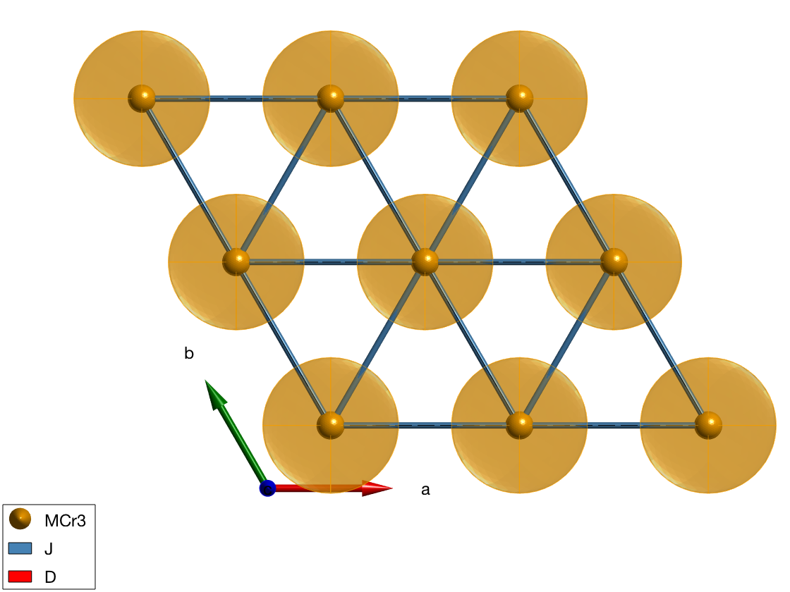
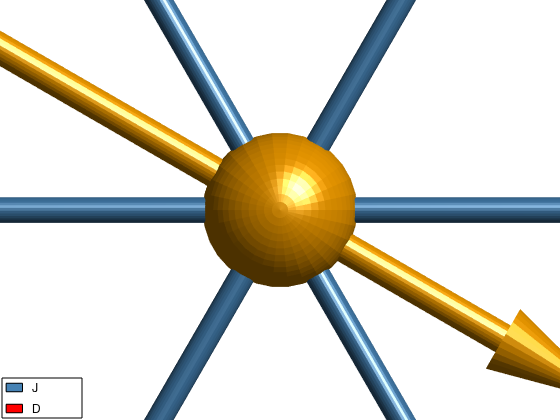
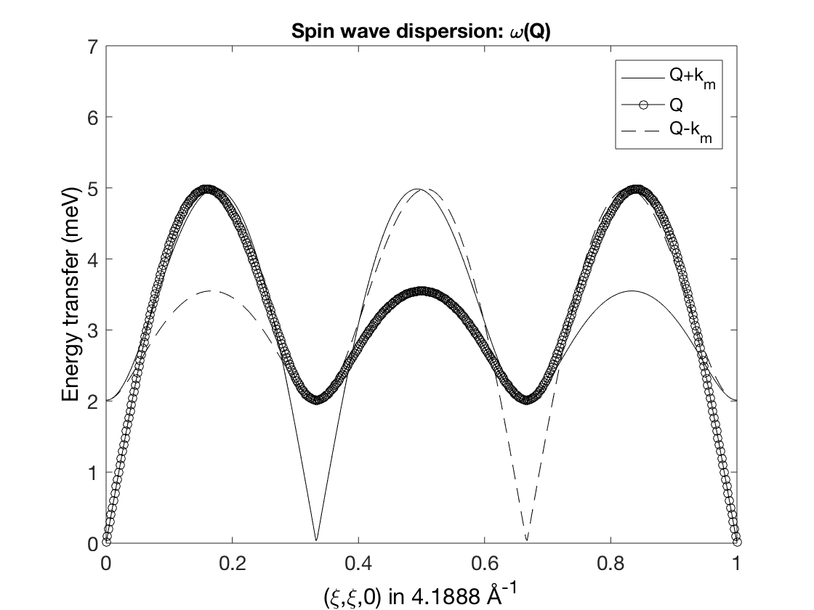
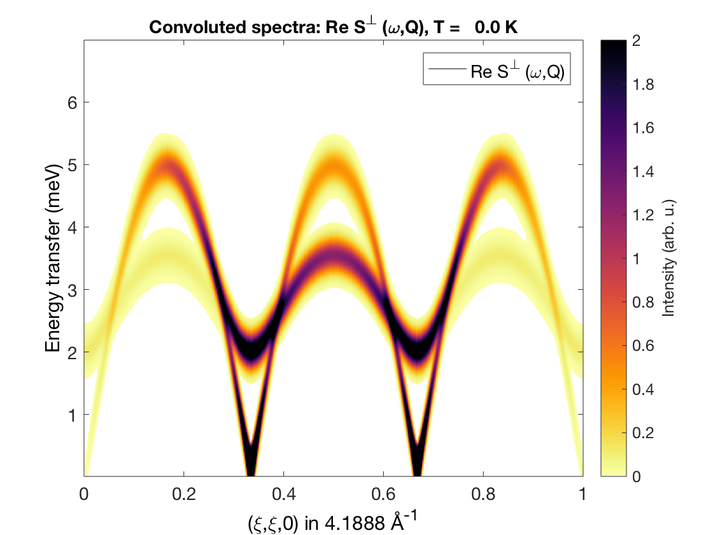
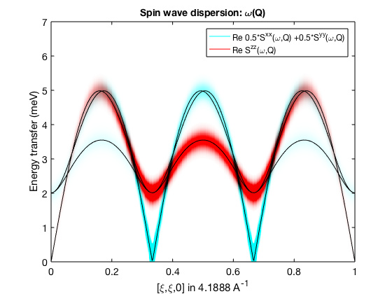
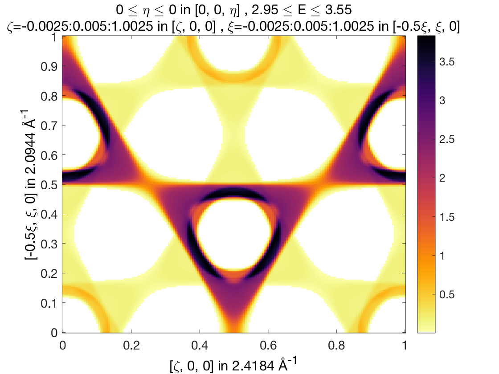

Contents
Triangular lattice AF with easy plane anisotropy
We create a triangular lattice in the ab-plane with Cr3+ magnetic atoms with spin quantum number S=3/2.
tri = spinw; tri.genlattice('lat_const',[3 3 4],'angled',[90 90 120]) tri.addatom('r',[0 0 0],'S',3/2,'label','MCr3','color','orange') tri.gencoupling plot(tri,'range',[2 2 1])
Magnetic Hamiltonian
We create first neighbor natiferromagnetic interactions in the ab-plane with J = 1 meV and a weak easy-plane anisotropy in the ab-plane. On the crystal structure plot, the red ellipsoids symbolize the easy-plane anisotropy, where easy directions are shown by the longer principal axis directions of the ellipsoid.
tri.addmatrix('value',1,'label','J','color','SteelBlue') tri.addmatrix('value',diag([0 0 0.2]),'label','D','color','r') tri.addcoupling('mat','J','bond',1) tri.addaniso('D') plot(tri,'range',[2 2 1])
Magnetic structure
we define the 120 degree ground state magnetic structure in the ab-plane with ordering wave vector of k=(1/3,1/3,0). Due to the anisotropy, the normal vector to the spin plane is n=(0,0,1) and we can use a single unit cell to describe the magnetic structure, since it is a single-k structure: nExt=(1,1,1).
tri.genmagstr('mode','helical','S',[0; 1; 0],'k',[1/3 1/3 0],'n', [0 0 1]); plot(tri,'range',[2 2 1],'magColor','purple','baseShift',[0;-1;0],'atomLegend',false)
Spin wave spectrum
We calculate the spin wave spectrum using the incommensurate magnetic structure in the (H,H,0) reciprocal space direction. In this direction, there are two magnetic Bragg peaks at (1/3,1/3,0) and (2/3,2/3,0). There are three spin wave modes: S(Q,omega) and S(Q+/-k,omega) due to the incommensurate ordering wave vector. There is one Goldstone mode at the magnetic Bragg peaks. By plotting only selected spin wave polarisations we can see, that the gapped modes at the Bragg peaks are polarised along the c-axis, while the Goldstone mode has a polarisation in the easy-plane.
triSpec = tri.spinwave({[0 0 0] [1 1 0] 500});
triSpec = sw_neutron(triSpec);
figure
sw_plotspec(triSpec,'mode','disp','axLim',[0 7],'colormap',[0 0 0],'colorbar',false)
triSpec = sw_egrid(triSpec,'Evect',linspace(0,7,500),'component','Sperp');
figure
sw_plotspec(triSpec,'mode','color','axLim',[0 2],'dE',0.4)
triSpec = sw_egrid(triSpec,'Evect',linspace(0,7,500),'component',{'0.5*Sxx+0.5*Syy' 'Szz'});
figure
sw_plotspec(triSpec,'mode','color','axLim',[0 1],'dE',0.4)
sw_plotspec(triSpec,'mode','disp','axLim',[0 7],'colormap',[0 0 0],'colorbar',false,'lineStyle','-','legend',false)
Warning: To make the Hamiltonian positive definite, a small omega_tol value was added to its diagonal!  
Plotting with Horace
The convoluted color spin wave spectra also can be plotted using the Horace package, see: [[http://horace.isis.rl.ac.uk]]. The spectrum will be calculated in the (H,K,0) plane and a constant energy cut is plotted. The disp2sqw_eval() function can be called Horace objects with any dimensions.
% Finite energy resolution is simulated by convoluting the spectra with a % Gaussian function, with the following FWHM. dE = 0.15; % The calculated spectra using the plotting function of Horace and assuming % Horace is installed and setup. Calculate spectra using disp2sqw_eval % Horace function. horaceObj = d3d(tri.abc,[1 0 0 0],[0,0.005,1],[0 1 0 0],[0,0.005,1],[0 0 0 1],[0,0.1,10]); horaceObj = disp2sqw_eval(horaceObj,@tri.horace,{'component','Sperp'},dE); cut1 = cut(horaceObj,[],[],[3.0 3.5]); % We use the honest colormap cm_inferno. plot(cut1) colorslider('delete') colormap(flipud(cm_inferno)) colorbar
-------------------------------------------------------------------------------- Taking cut from dnd object...
Written by Sandor Toth 16-June-2014